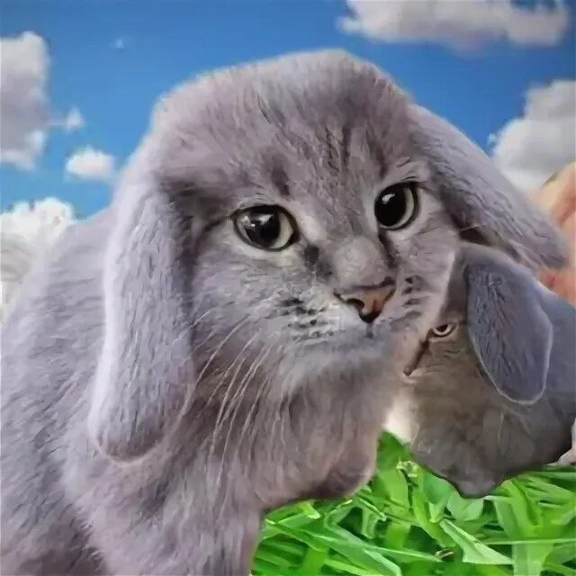
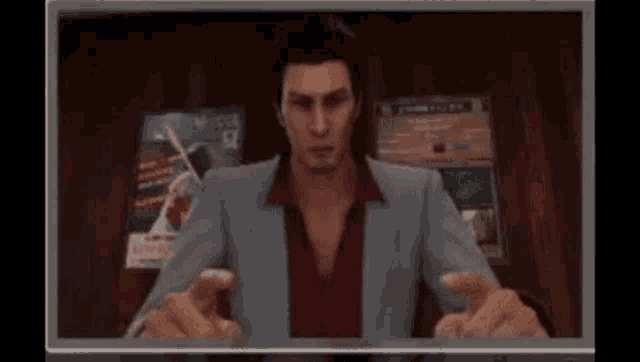
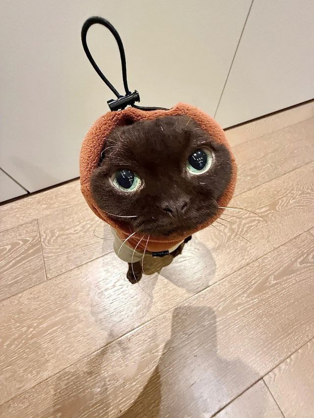
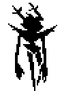
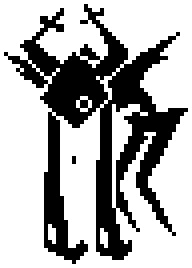

Кто я такой вообще?
Привет! Меня зовут Андрей, я ученик ТПУ. Моё направление - цифровой дизайн.
Мой автопортрет
Мои интересы и хобби
Играл на гитаре(до травмы в 1977); мучаюсь с linux; купил себе книг, чтобы начать понимать что-то в своём профиле. Вдохновляющие люди - Сигэсато Итои(создал необычную и интересную серию игр), Тоби Фокс(это не нужно пояснять).
Сильные и неочень стороны
Есть небольшой опыт в приложениях aseprite,fl studio, blender. Слабая сторона - коддинг(хоть и люблю мучать конфиги своей ос).
Роль в команде
Помогаю со всем, разбираю всякие вопросы и проблемы команды. Могу быть и дизайнером и коддером, если понадобиться. Могу быть ленивым, так что не злитесь.
Мои проекты и мои ожидания
Текущие проекты - несозданная игра (фото отсутствует по понятным причинам).Также пытаюсь научиться рисовать и совмещать это с учёбой.В будущем также хочу научиться писать музыку. Ожидания от курса - понять основы движков разработки ну и получить опыт от командной работы над проектом.

Мои ссылки всякие
Telegram Github  Всем пока!